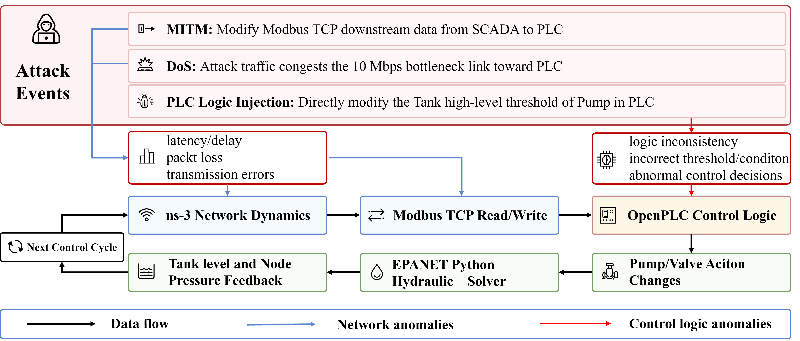

攻防实验
Hydro-CPS-Sim 提供 MITM、DoS 和 PLC 逻辑注入三类攻击。你可以设置攻击目标和生效窗口，观察攻击如何影响传感器数据、PLC 输出和水网状态。
攻击类型

MITM 数据篡改
MITM 修改 SCADA 与 PLC 之间的 Modbus 数据。例如，修改发送至 PLC4 的 T7 水位，可以改变控制器看到的输入值，从而影响 PU10 的启停判断。
DoS 通信干扰
DoS 通过 UDP 流量占用网络链路，影响正常的 Modbus 通信。采集超时时，SCADA 可能继续使用之前保存的观测值。你可以比较通信状态、数据更新时间和泵阀动作，了解旧数据对控制的影响。
PLC 逻辑注入
逻辑注入修改 PLC 中的控制规则，例如水泵的关闭阈值。修改后的规则由 OpenPLC 执行，并通过泵阀动作影响水力过程。
示例配置
当前版本提供以下示例配置，攻击窗口以控制轮次表示。
| 配置文件 | 目标或用途 | 攻击轮次 |
|---|---|---|
config.yaml |
无攻击基线 | — |
config_mitm_plc4.yaml |
PLC4 下行数据 | 20–40 |
config_mitm_plc9.yaml |
PLC8 的 T7 响应 | 20–40 |
config_mitm_composite_plc7_plc9.yaml |
PLC6 T5 + PLC8 T7 | 20–40 / 30–50 |
config_dos_plc2_single.yaml |
PLC2，单攻击节点 | 5–90 |
config_dos_plc2_three_bots.yaml |
PLC2，三个攻击节点 | 5–90 |
config_openplc_logic_plc4.yaml |
PLC4 中 PU10 的 T7 阈值 | 20–90 |
每个配置包含对应的网络、控制和攻击设置。你可以从示例开始，调整目标、攻击参数和时间窗口。
运行实验
先运行无攻击基线：
bash scripts/run_all.sh --config examples/c_town/config.yaml
保存基线输出后，选择攻击配置运行，例如：
bash scripts/run_all.sh --config examples/c_town/config_mitm_plc4.yaml --logic-wait 0.3
每次运行会更新输出目录。将需要比较的结果复制到独立目录后，再开始下一次实验。
查看结果
结果保存在 output_path 下的 reports/csv/ 中。
| 文件 | 内容 |
|---|---|
physics.csv |
水位、压力等水力状态 |
actuator_state.csv |
泵阀状态 |
scada_observed_long.csv、scada_observed_wide.csv、scada_observed_key.csv |
SCADA 观测数据 |
attack_schedule.csv、attack_events.csv |
攻击调度与事件 |
scada_timeout_events.csv |
通信超时记录 |
cycle_timing.csv |
闭环各阶段的耗时 |
比较攻击运行和基线时，可以先查看输入数据是否改变，再查看 PLC 输出和水力状态。通信超时不一定改变泵阀动作，输入变化也可能在后续轮次才触发控制规则。
水位和压力可使用 RMSE、平均绝对偏差或最大绝对偏差进行比较。按物理时间绘图时，使用水力记录中的 sim_time。网络和控制配置见配置说明。